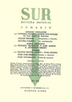

‹ menu
playlists
paused
press ▶❙❙ to start it again
no music yet
put a YouTube link in a text file in
music/
and regrow.
menu
‹‹
››
▶❙❙
this player needs JavaScript.
LIBRARY!!!!!/The Garden of Forking Paths.epub
← back to anmo.garden
backcover.jpg
(14.1kB)
content.opf
(8.93kB)
cover.jpeg
(30.6kB)
images/
(3 items, 37kB)
index_split_000.html
(788B)
index_split_001.html
(826B)
index_split_002.html
(1.25kB)
index_split_003.html
(2.71kB)
index_split_004.html
(1.45kB)
index_split_005.html
(3.52kB)
index_split_006.html
(40.7kB)
index_split_007.html
(14.4kB)
index_split_008.html
(13.7kB)
index_split_009.html
(24.1kB)
index_split_010.html
(14.9kB)
index_split_011.html
(11.5kB)
index_split_012.html
(18.7kB)
index_split_013.html
(24.8kB)
index_split_014.html
(1.78kB)
index_split_015.html
(817B)
index_split_016.html
(781B)
index_split_017.html
(899B)
index_split_018.html
(796B)
index_split_019.html
(967B)
index_split_020.html
(731B)
index_split_021.html
(796B)
index_split_022.html
(2.4kB)
index_split_023.html
(1.01kB)
index_split_024.html
(920B)
index_split_025.html
(1.01kB)
index_split_026.html
(1.46kB)
index_split_027.html
(1kB)
index_split_028.html
(979B)
index_split_029.html
(980B)
index_split_030.html
(1.21kB)
index_split_031.html
(1kB)
index_split_050.html
(236B)
index_split_070.html
(238B)
META-INF/
(1 item, 244B)
mimetype
(20B)
page_styles.css
(58B)
stylesheet.css
(8.5kB)

surmasthead.jpg
(107.7kB)
titlepage.xhtml
(799B)
toc.ncx
(3.11kB)
anmo.garden
drag things around →
{kind=link}
{kind=link}
{kind=link}